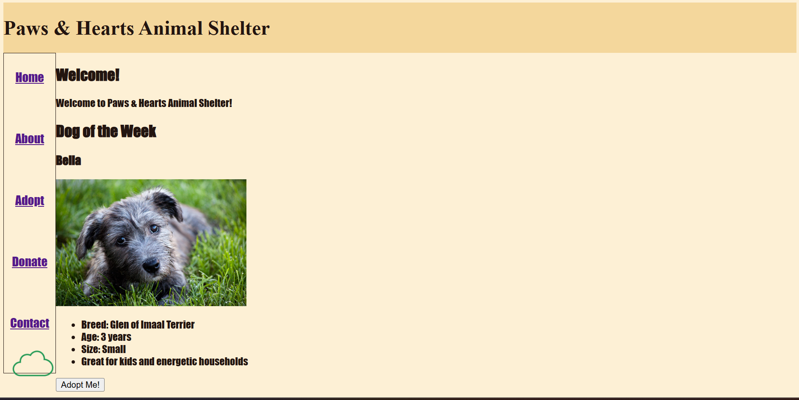

Peer Review 2
This is my peer review for the second website. I have reviewed the following website:

- The site is easy to locate and access, with a clear URL and straightforward navigation to the site itself.
- File naming is consistent and uses lowercase letters, following the assignment guidelines.
- The website is well designed and consistent in its layout and styling. The text is slightly difficult to read in some areas, particularly in the sections with the content of the page included in it. Maybe consider not bolding the text to make it easier to read!
- Demosrtrates the CRAP principles of Contrast, Repetition, Alignment, and Proximity effectively, creating a visually consistent design that allows for easy navigation and a good user experience.
- Page includes a header, main, and footer content, which follows the required page layout
- The header includes the Paws & Hearts Animal Shelter logo, which is consistently used throughout the website.
- Website needs some kind of slogan to be included to meet the checklist requirements, as well as to strenghen the branding and identity of the website.
- Footer needs HTML and CSS validation links in the footer to fully match the checklist requirements.
- With some adjustments to the styling, text, and other mentioned items, the website has the potential to be a very strong and effective website for the client.